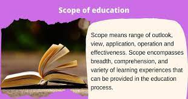

About
Let us learn about Lifestyle In Education in brief
Background
An apparent comprehension of the macro-level contexts in which education influences health is crucial to enhancing national health administration and policy. In this study, we employ a visual analytic approach to investigate the correlation between education and health throughout a 20-year timeframe for nations across the globe.
Method
Using factual information from the OECD and the World Bank for 26 OECD nations for the years 1995 to 2015, we recognize connections between schooling and health benchmarks. By encompassing before and after educational achievement benchmarks, we emphasize the twofold function of schooling as both a catalyst for possibility and as well as of disparity.
.jpg)
Analyses and Results
In this section, we explore the association of infant mortality rates with the enrollment rate of education levels for all countries. The expectation with higher education concludes in a decrease in infant mortality. The graph shows two Y-axes with one axis representating average infant mortality rate per 1000 live births and the other axis showing rates from 0 to 120 to represent enrollment rates in education. It is possible for the number of children enrolled at a level to exceed the official populations in students in a certain age group. This ratios can lead up to 100%. In conclusion, this shows that education tends to rise.
.jpg)
Scope And Limitations
Our investigation encounters a few restrictions. Firstly, the quantity of nations is restricted, and considering the fact that the information is mostly obtained from OECD, they relate to the continent of Europe. We also evaluated a restricted set of factors. A more extensive analysis could encompass a broader range of factors drawn from diverse sources. With the aim of obtaining a macro viewpoint on the education–health connection, we integrated some reliant factors that may not traditionally be perceived as pure health indicators. For instance, the factor potential years of life lost is influenced by untimely deaths that may also be caused by non-health correlated elements. Additionally, there could be some mediating factors in the education–health relationship that need to be taken into account. Lastly, although our study examines associations and connections between factors, it does not investigate causality.
Conclusion
Both learning and wellness are at the core of personal and community welfare. Understandings of both concepts should surpass an individual perspective to encompass and contemplate the societal environment and framework in which the learning-wellness correlation is ingrained. This approach necessitates a blend of cross-disciplinary exploration, innovative conceptual frameworks, and diverse data resources. As disparities in health extend globally, there is a necessity for fresh avenues in research and policy on the reciprocal advantages of education and health.

Leave a comment